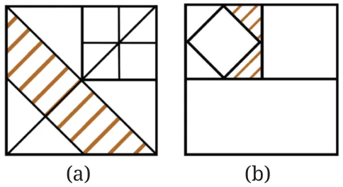

Figure it Out (Page 183)
- A water tank is filled from a tap. If the tap is open for 1 hour, \(\frac{7}{10}\) of the tank gets filled. How much of the tank is filled if the tap is open for:
- \(\frac{1}{3}\) hour — Ans: \(\frac{7}{30}\) part
- \(\frac{2}{3}\) hour — Ans: \(\frac{14}{30}\) part
- \(\frac{3}{4}\) hour — Ans: \(\frac{21}{40}\) part
- \(\frac{7}{10}\) hour — Ans: \(\frac{49}{100}\) part
- For the tank to be full, how long should the tap be running? Ans: \(\frac{10}{7}\) hours
- The government has taken \(\frac{1}{6}\) of Somu’s land to build a road. What part of the land remains with Somu now? She gives half of the remaining part of the land to her daughter Krishna and \(\frac{1}{3}\) of it to her son Bora. After giving them their shares, she keeps the remaining land for herself.
Ans: Part of land that remains with Somu \(= \frac{5}{6}\)
- What part of the original land did Krishna get? Ans: \(\frac{5}{12}\)
- What part of the original land did Bora get? Ans: \(\frac{5}{18}\)
- What part of the original land did Somu keep for herself? Ans: \(\frac{5}{36}\)
- Find the area of a rectangle of sides \(3\frac{3}{4}\) ft and \(9\frac{3}{5}\) ft. Ans: 36 sq. ft.
- Tsewang plants four saplings in a row in his garden. The distance between two saplings is \(\frac{3}{4}\) m. Find the distance between the first and last sapling.
Ans: \(2\frac{1}{4}\) m
- Which is heavier: \(\frac{12}{15}\) of 500 grams or \(\frac{3}{20}\) of 4 kg?
Ans: \(\frac{3}{20}\) of 4 kg is heavier than \(\frac{12}{15}\) of 500 gm.
Solutions (Page 191)
In a day, the number of times —
- the first fountain will fill the cistern is \(1 \div 1 = 1\)
- the second fountain will fill the cistern is \(1 \div \frac{1}{2} = 2\) times
- the third fountain will fill the cistern is \(1 \div \frac{1}{4} = 4\) times
- the fourth fountain will fill the cistern is \(1 \div \frac{1}{5} = 5\) times
The number of times the four fountains together will fill the cistern in a day is
\(= 1 + 2 + 4 + 5 = 12\)
Solutions (Page 193)
In each of the figures given below, find the fraction of the big square that the shaded region occupies.

Ans: The shaded region of Fig. (a) occupies \(\frac{3}{8}\) of the area of whole square. The red shaded part of Fig. (b) occupies \(\frac{1}{16}\) of the area of whole square.